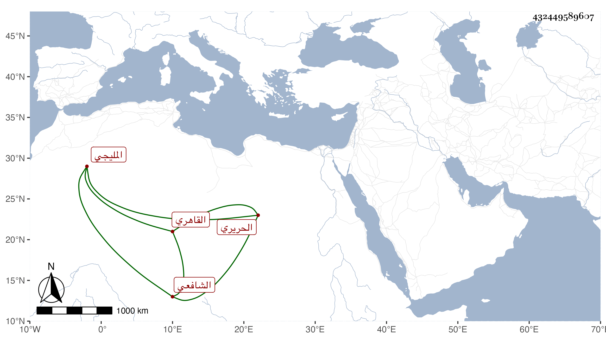

0902Sakhawi.DawLamic.ITO20230111-ara1.EIS1600.432449589607
Biography ID: 432449589607
183
محمد بن محمد بن أبي بكر أبو الخير المليجي ثم القاهري الشافعي الحريري . مات في ليلة الجمعة سادس عشري ربيع الآخر سنة اثنتين ثمانين فجأة ، وصلى عليه من الغد بالأزهر بعد الصلاة ، وكان قدم لازم العلاء القلقشندي والمحلي في الاخذ عنهما مع أخذه عن غيرهما بل سمع البخاري بالظاهرية القديمة وغير ذلك ، وكتب بخطه أشياء وفضل مع سلوكه طريق الخير وتكسبه في حانوت بالوراقين وأظنه زاد على الاربعين ونعم الرجل رحمه الله .
